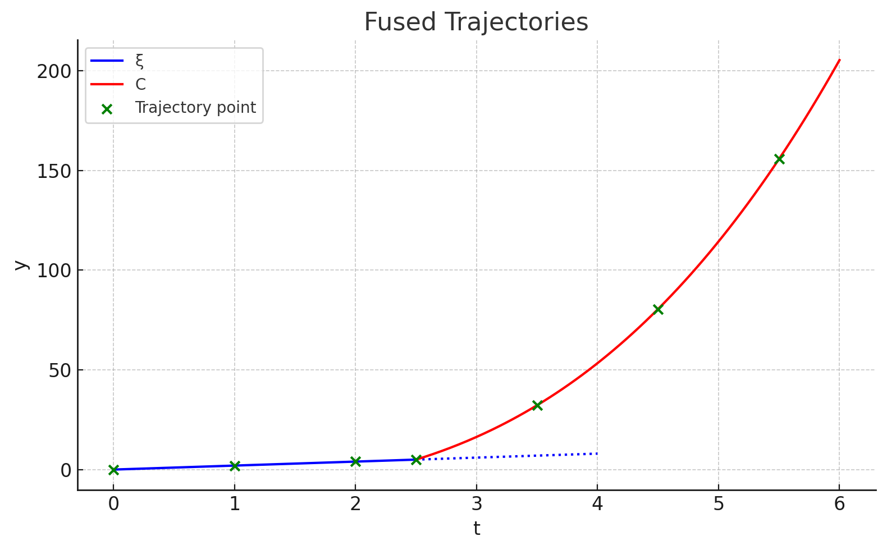
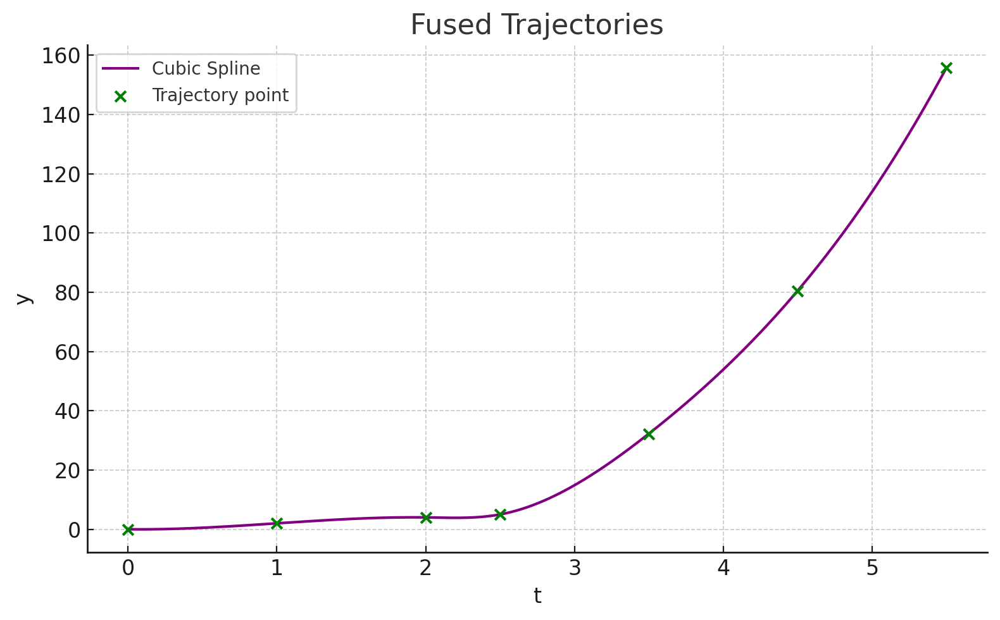
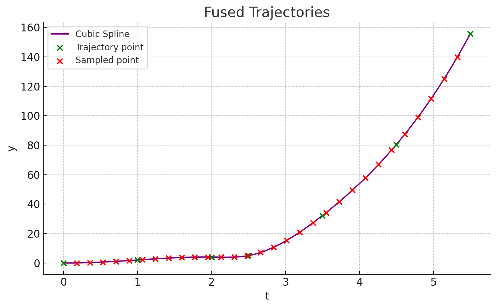

I’ve seen a few papers recently about the concept of what I think of as “trajectory interruption.” Robotics policies which generate action chunks have the issue that chunks sometimes overlap. If the current running action chunk is scheduled to end in 5 seconds, and a new chunk arrives right now, what do you do? You could design your policy so that new chunks begin where old chunks end; the issue with this is that your robot will be unable to react to perceptual inputs for at least the length of a full chunk, and maybe longer if computing those chunks isn’t guaranteed to take negligible time. So a better approach is to solve a bunch of chunks under realistic conditions, compute a 99th percentile time or something, and schedule new chunks to start at that time (you need to schedule the chunk start time in advance because you typically need to know where the robot will start to solve the chunk). Obviously, the length of a chunk needs to be at least the solution time or you can’t run in real time.
So now you have one or more chunks which define a planned trajectory $\xi_{O}$ (O for original) for your robot out to time $T$, and a new chunk $C$ arrives that’s scheduled to start at time $t_{new} < T$. When you were solving that chunk, you assumed a start state of $\xi(t)$, so $C$ already starts in the right place. The question is: how do you modify your current planned trajectory so that the whole thing smoothly transitions from your current plan to the updated plan, where you execute (approximately) $\xi$ up to time $t_{new}$ and $C$ from that point onwards?
Here’s an example of the problem I’m talking about: C starts at $t_{new} = 2.5$. There were old waypoints (not pictured) at t=3 and t=4 where $\xi$ would have continued, but we don’t want to use them anymore because we have a new trajectory starting before we would reach them.

The intuitive answer, which does not work, is “construct a brand-new trajectory replacing the tail of $\xi$ with $C$ (let’s call the new trajectory $\xi_C$) and execute it.” Actually, this typically does work, but it has an edge case: if $C$ started at $t = 0.5$, it would replace the point that the controller is currently tracking. At that point, your robot motion will exhibit very noticeable jolts at the moment you switch from executing $\xi_O$ to $\xi_C$. The reason for the jolt is that it’s (to my knowledge) impossible to perfectly overwrite a trajectory while continuously controlling a robot: there will be some discontinuity in the controller’s error signal at the moment you overwrite the trajectory, and a discontinuity in the error signal produces a discontinuity in the motion. The intuitive response to this is, “no problem, that’s what tuning the $d$ gain is for.” This also does not work. The motion discontinuities are also quite loud on most joints (play in the actuators?), and if you roll out new chunks fast enough, you produce a very discomforting shuddering effect with a thudthudthud in the background.
Almost every paper I have read on this suggests an ensembling solution to the problem. This is where instead of immediately switching from $\xi_O$ to $\xi_C$, you use some blending technique to create $\xi_F$, a fused trajectory that starts off strongly resembling $\xi_O$ and ends up very similar to $\xi_C$. For instance, Physical Intelligence’s $\pi_0$ model used exponential blending:
$$\xi_{F} = \alpha^t \xi_{O} + (1 - \alpha^t) \xi_{C}$$ Where $t$ is the time since the arrival of $C$ and $\alpha < 1$ is a tunable decay rate parameter. Another paper I read recently, LiPo, uses linear interpolation between $\xi_O$ and $\xi_C$ and adds a perturbation signal to the trajectory to minimize the jerk of the final computed trajectory $\xi_F$.
Creating fused trajectories works in practice, but doesn’t sit well with me. It essentially accepts unplanned behavior for times that could be on the order of a large fraction of a second. A blend of two plans which seemed like the best choice at two different times is not always itself a good plan.
So I am here to say that you can do this with splines! This is a solution I came up with incidentally for my thesis work, which also required interruptible trajectories, and I can confirm that it results in no perceptible shuddering while also sticking to planned behavior at all times.
A spline is a way of fitting a series of curves to a series of points for purposes of interpolation. The most common curve to use is a cubic polynomial. Here’s an example of a cubic spline fusing together the two trajectories from before:
 Compared to the original plot, there are some slightly weird nonlinearities, but overall it’s a good match. The trick of making this interruptible is that the biggest jolt comes from the initial state update. So first, you sample your spline regularly at a large number of waypoints, and track the more densely sampled trajectory as your new goal:
 Now we can use the naive method of replacing the tail! It’s still technically possible to encounter the edge case (if $C$ starts at $t_{new} = 0.1$, for instance), but it’s far less likely.
For bonus points: cubic splines have four free parameters (coefficients for the polynomial, including the constant term) and only have to satisfy three constraints in a cubic spline (each cubic curve must start and end at the right points, and the spline should have a continuous first derivative). This leaves a free parameter for each spline, which you can use to create interesting and useful variants like non-overshooting splines. You can use this free parameter for the first curve in the spline to enforce that the first derivative of the new trajectory, when it starts, is equal to the first derivative of the old trajectory. Theoretically, this makes your trajectory extra-smooth, though in practice it doesn’t seem to matter that much.
In fact, I suspect you could probably do this with any interpolation method, and splining isn’t necessary. But splining is also not terribly computationally expensive, it has nice properties like smooth derivatives, and it’s already implemented for you in most programming languages.
For instance, here’s the code to generate the last image in this post:
# Re-import necessary modules due to state reset
import matplotlib.pyplot as plt
import numpy as np
from scipy.interpolate import CubicSpline
# Re-define the green dot coordinates
x_dots = np.array([0, 1, 2, 2.5, 3.5, 4.5, 5.5])
offset = 5 - 2.5**3
y_dots = np.where(x_dots <= 2.5, 2 * x_dots, x_dots**3 + offset)
# Create the cubic spline interpolation through the green dots
cs = CubicSpline(x_dots, y_dots)
# Generate smooth x values and corresponding y values for the spline
x_spline = np.linspace(x_dots[0], x_dots[-1], 300)
y_spline = cs(x_spline)
# Generate 30 evenly spaced points in the open interval (0, 5.5)
x_red_dots = np.linspace(0, 5.5, 32)[1:-1] # Exclude the endpoints
y_red_dots = cs(x_red_dots)
# Plotting the spline and both sets of points
plt.figure(figsize=(8, 5))
plt.plot(x_spline, y_spline, label='Cubic Spline', color='purple')
plt.scatter(x_dots, y_dots, color='green', label='Trajectory point', zorder=5)
plt.scatter(x_red_dots, y_red_dots, color='red', label='Sampled point', zorder=5)
plt.xlabel('t')
plt.ylabel('y')
plt.title('Fused Trajectories')
plt.grid(True)
plt.legend()
plt.tight_layout()
plt.show()